Quick Start
In this quick start, we will create a system, test it and run it client and server side.
What is a system?
With System Designer you create in fact a system and not an application. But what is a system?
A system:
- is defined by a model,
- is composed by components and
- reacts to events with actions that we call behaviors.

What is the system that we will create ?
We want to create a system that will show the name of the father of Luke Skywalker.
Now let's define a bit our system with the informations we know about the system (if you have watched Star Wars):
- Luke Skywalker is a Jedi,
- Luke Skywalker father is Darth Vader and
- Darth Vader is also a Jedi.
From that we see that:
- we have one model: Jedi,
- a Jedi has a least for properties firstName and lastName,
- a Jedi has a link father to another Jedi,
- we have 2 Jedis: Luke Skywalker and Darth Vader and
- Luke Skywalker has for father Darth Vader.
Now let's create this system.
Create a system
- click on the '+' button on the left toolbar,
- set StarWars as name,
- click on Create button,
- a new system is now created and appears in the Systems list.
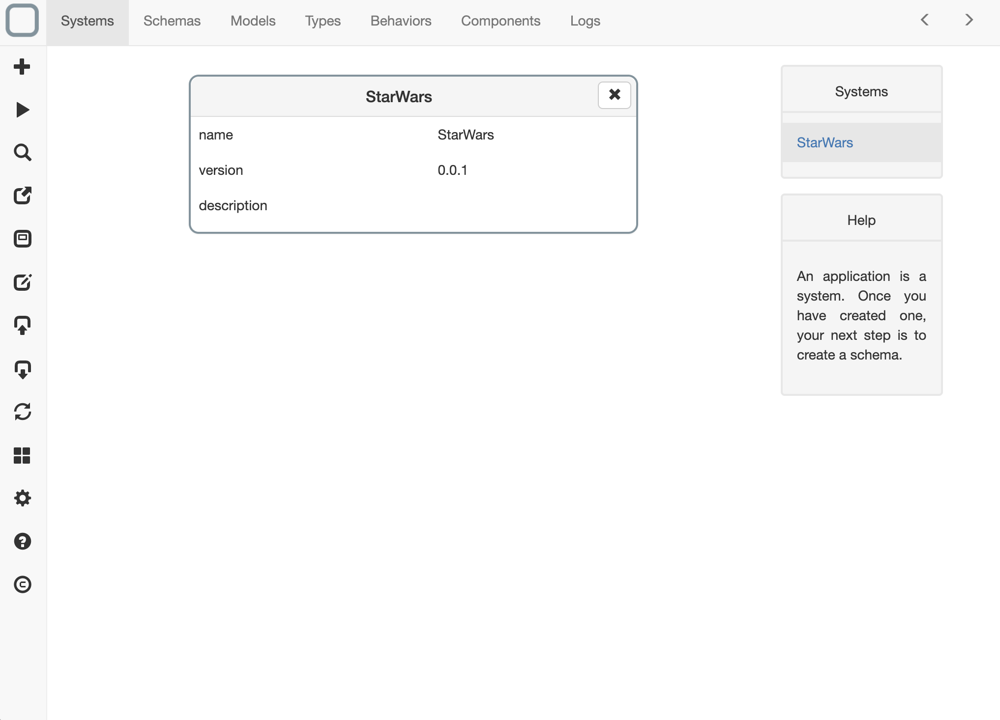
Create a schema
What is a schema ?
A schema helps you to define your model. A schema generates a model based on very simple informations. You can then edit the generated model
- click on the Schemas tab,
- click on the + button on the left toolbar,
- set Jedi as name,
- click on Create button,
- a new schema is now created and appears in the Schemas list,
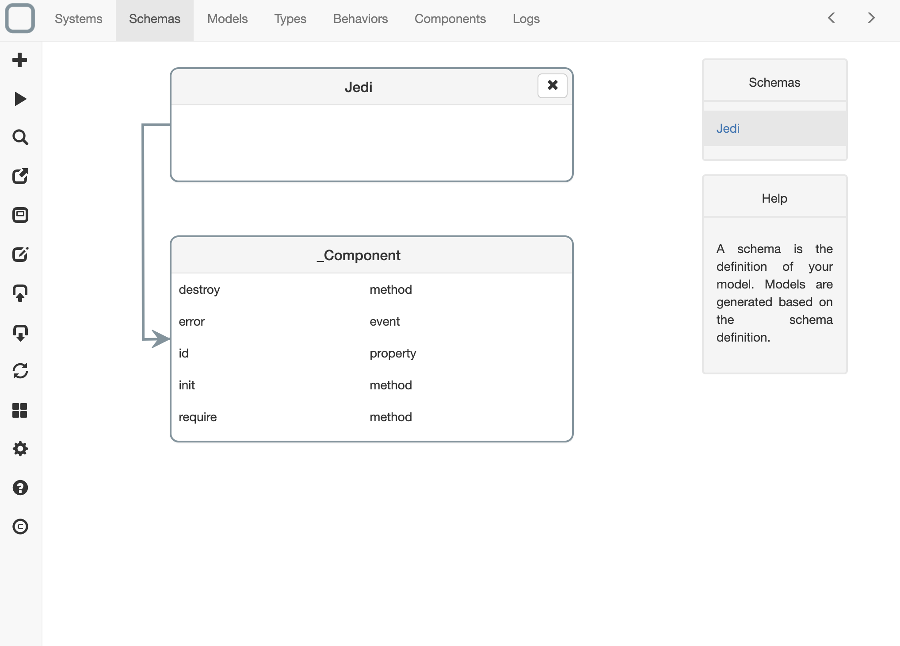
- click on it,
- update the schema with:
{
"_id": "1e378193da16eef",
"_name": "Jedi",
"_inherit": [
"_Component"
],
"firstName": "property",
"lastName": "property",
"father": "link",
"fullName": "method"
}
- save (by clicking on the first icon of the toolbar).
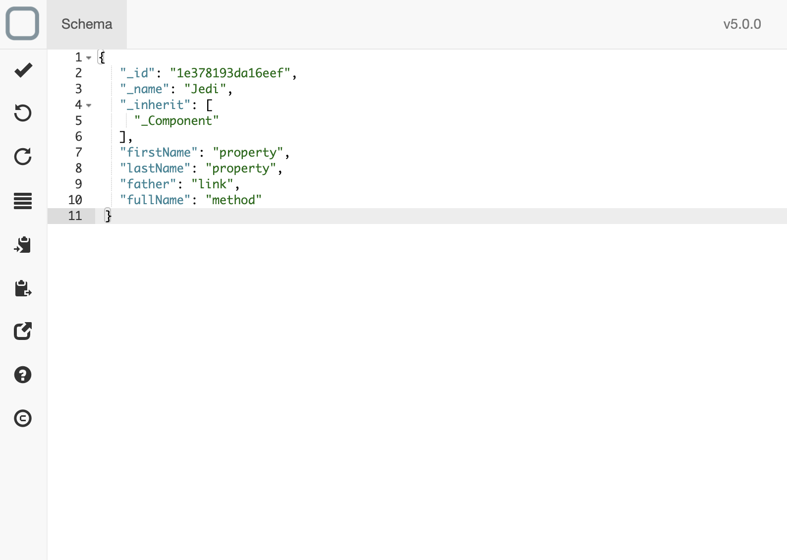
What can be defined in a schema ? - Use property for defining a property. - Use link for defining a one-to-one relationship between models. - Use collection for defining a one-to-many relationship between models. - Use method for defining a method. - Use event for defining an event.
What happens when you save a schema ?
A model will be automatically generated based on the informations you set in the schema.
Edit a model
What is a model ?
A model is the UML representation of the class that you will use in your system. You can edit these models and update many informations (type, default value, ...).
- click on the Models tab,
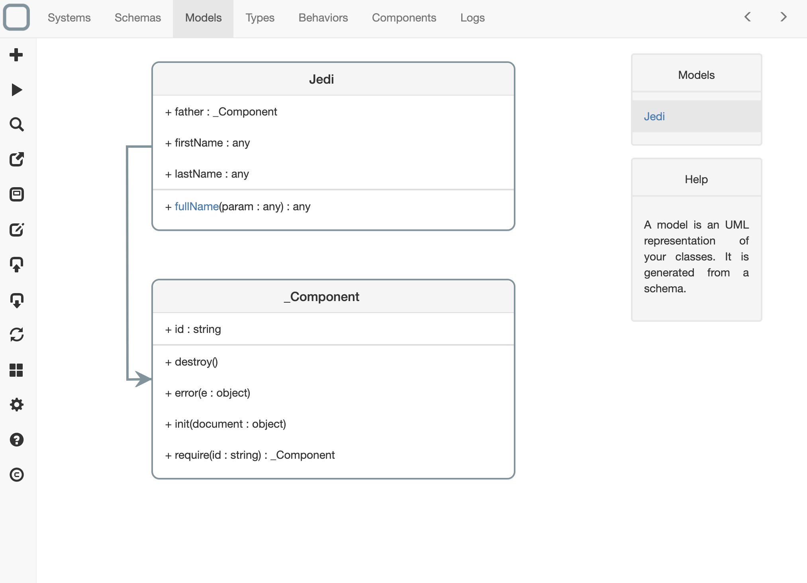
What are the values set by default ?
In the example: - all properties have type any: they can have all kind of type, - all links have _Component type: they can be linked to any kind of object and - all methods have one parameter param of type any and they return a value of type any.
- click on the Jedi model,
- update the model with this:
{
"_id": "1a3a2150b31c099",
"_name": "Jedi",
"firstName": {
"type": "string",
"readOnly": false,
"mandatory": true,
"default": ""
},
"lastName": {
"type": "string",
"readOnly": false,
"mandatory": true,
"default": ""
},
"father": {
"type": "Jedi",
"readOnly": false,
"mandatory": false,
"default": ""
},
"fullName": {
"result": "string"
}
}
- save.
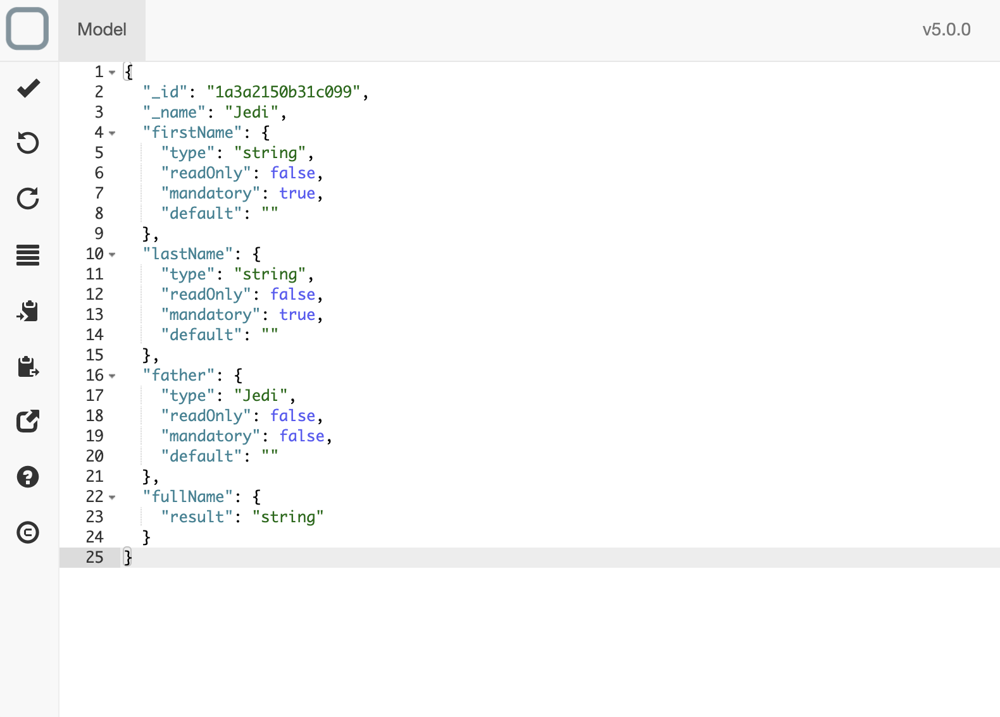
What has be done ?
In this example, we have: - set the type of firstName to string, - set the type of lastName to string, - set the type of father link to Jedi (the father of a Jedi is a Jedi) and - remove all the parameter definition of the fullName method.
Add a behavior
What is a behavior ?
A behavior is an action that is executed when we change the state of a component or invoke one of its method.
- click on the Models tab,
- click on fullName method,
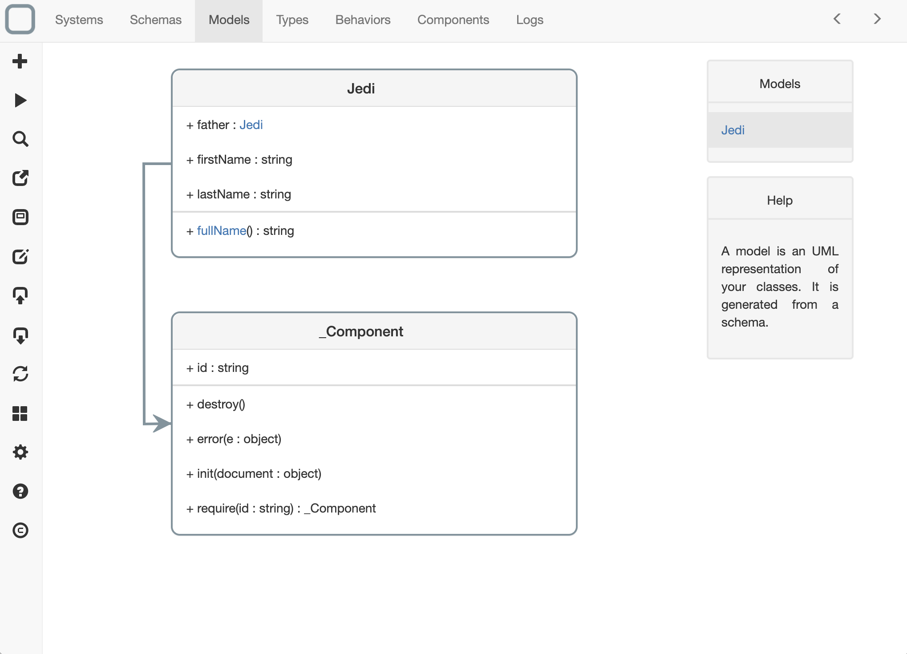
- you navigate to the Behaviors tab,
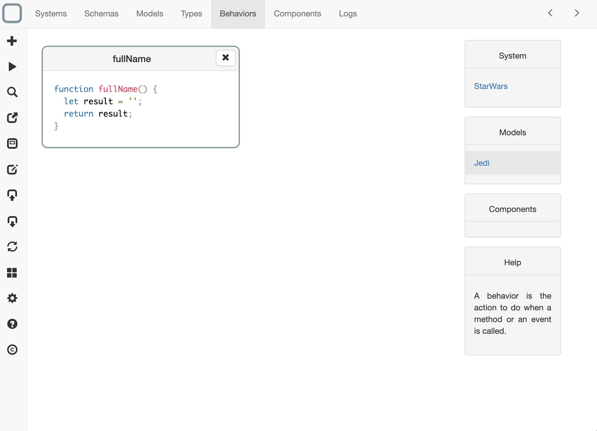
- click on the fullName element,
- update the action with this:
function fullName() {
let result = this.firstName() + ' ' + this.lastName();
return result;
}
For every property set in the schema, there is a method to get / get its value.
System Designer uses JavaScript as main language for building systems.
- save.
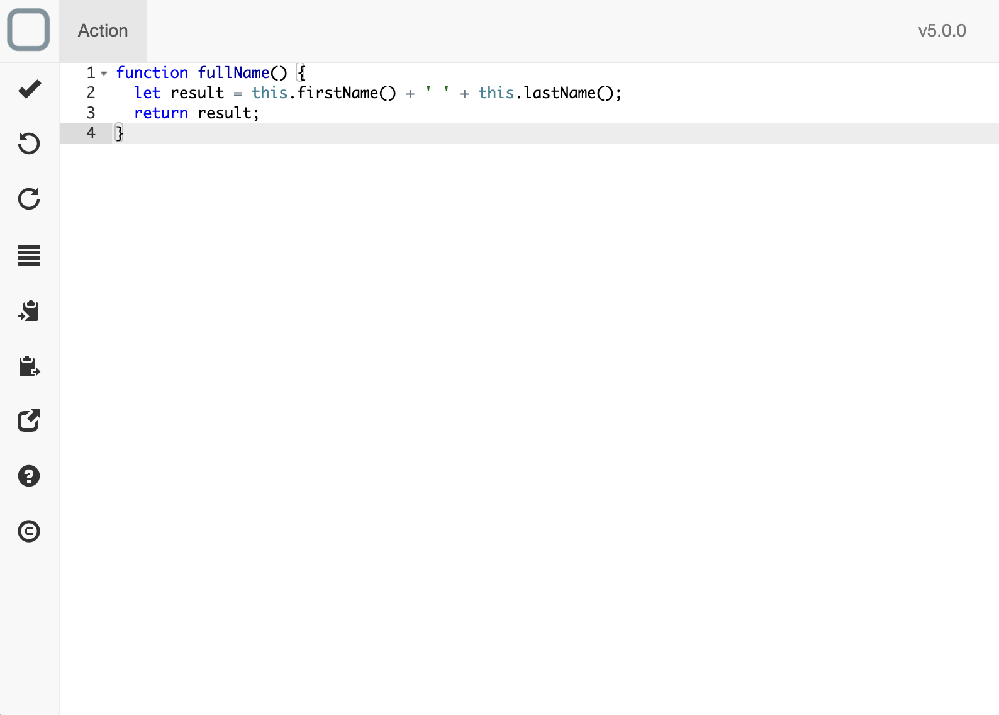
Create components
What is a component ?
A component is the instance of one class of your model. You can define them graphically but you can of course create them with code (but do not forget to require the class before using it in that case, example: const Jedi = this.require('Jedi') ).
- click on the Components tab,
- click on the + button on the left toolbar,
- a new component is now created and appears in the Components list,
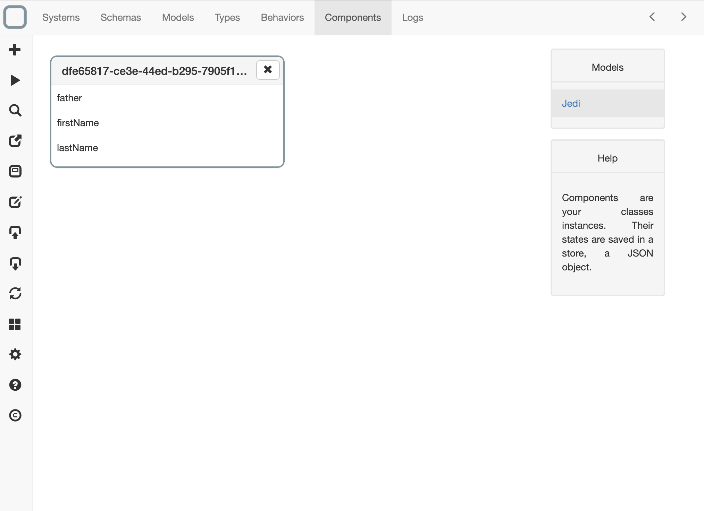
What are the informations set by default ?
The component unique identifier _id (used to require the component) and the values of the attributes, links or collections of the model (set with their default property value).
- click on it,
- update the component with this:
{
"_id": "vader",
"father": "",
"firstName": "Darth",
"lastName": "Vader"
}
- save,
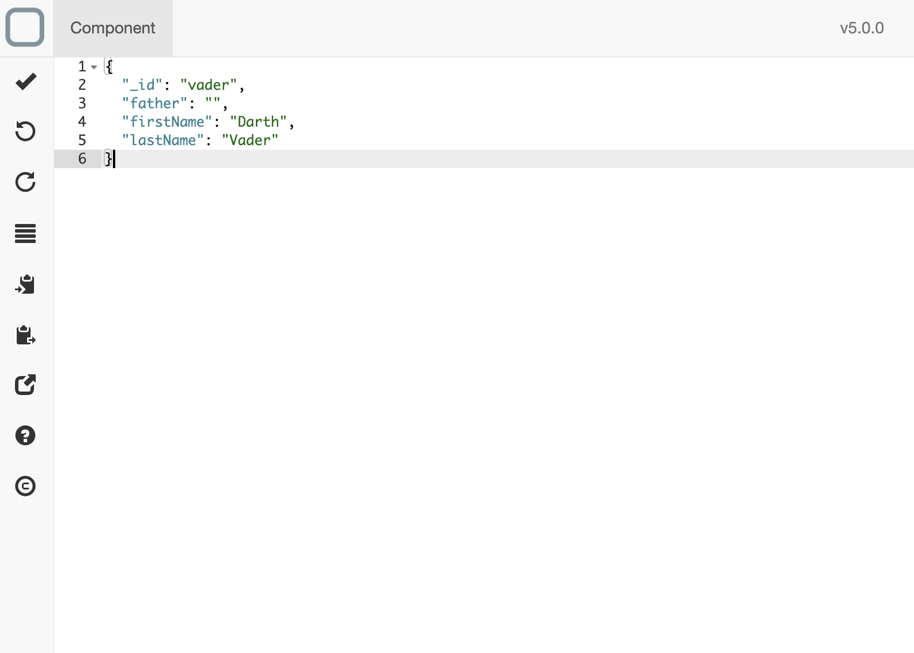
- click again on the + button on the left toolbar,
- a new component is now created and appears in the Components list,
- click on it,
- update the component with this:
{
"_id": "luke",
"father": "vader",
"firstName": "Luke",
"lastName": "Skywalker"
}
- save.
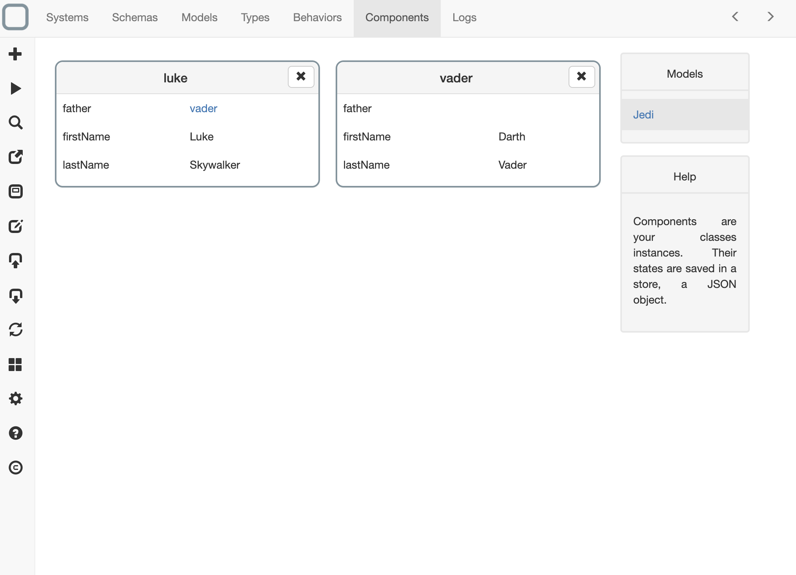
What has be done ?
In this example we have: - created a Jedi component that has for id vader and - created a Jedi component that has for id luke, in this component we set the value of father link property with the id of the related Jedi component, vader.
Add code on the start method of the system
The start method of your system is the entry point of your system. It is there that you put the business logic of your system.
- click on the Behaviors tab,
- click on StarWars on the right,
- click on the element who has got a start method,
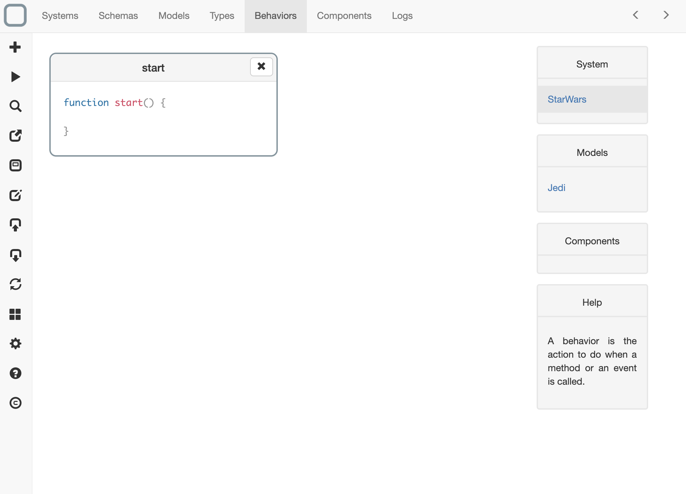
- update the action with this:
function start() {
let luke = null,
logger = null;
// get logger component
logger = this.require('logger');
// get luke component
luke = this.require('luke');
// get the name of the father of Luke
logger.info(luke.father().fullName());
}
- save.
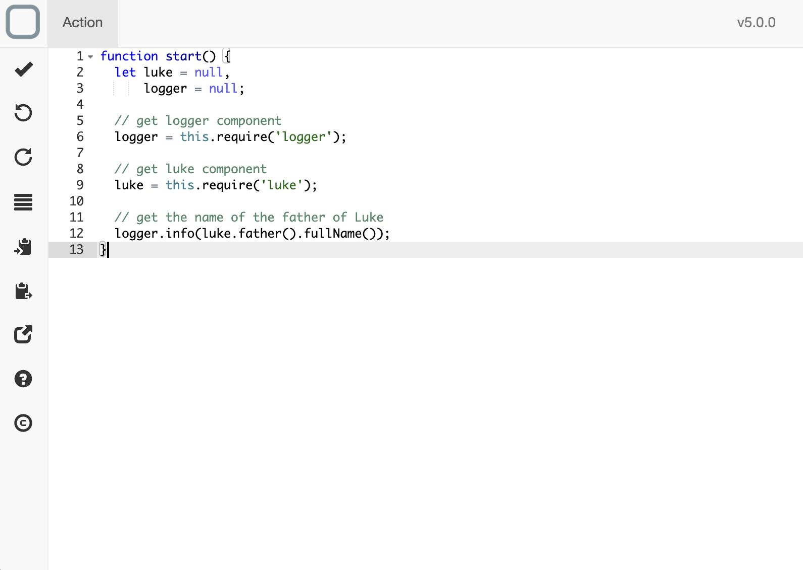
in start method this refers to the current system.
What is a logger component ?
A logger component is available to log messages in System Designer.
Run the system
- click on the run button on the left (the 2nd button from the top),
- a new window informing you that your system is running will open and
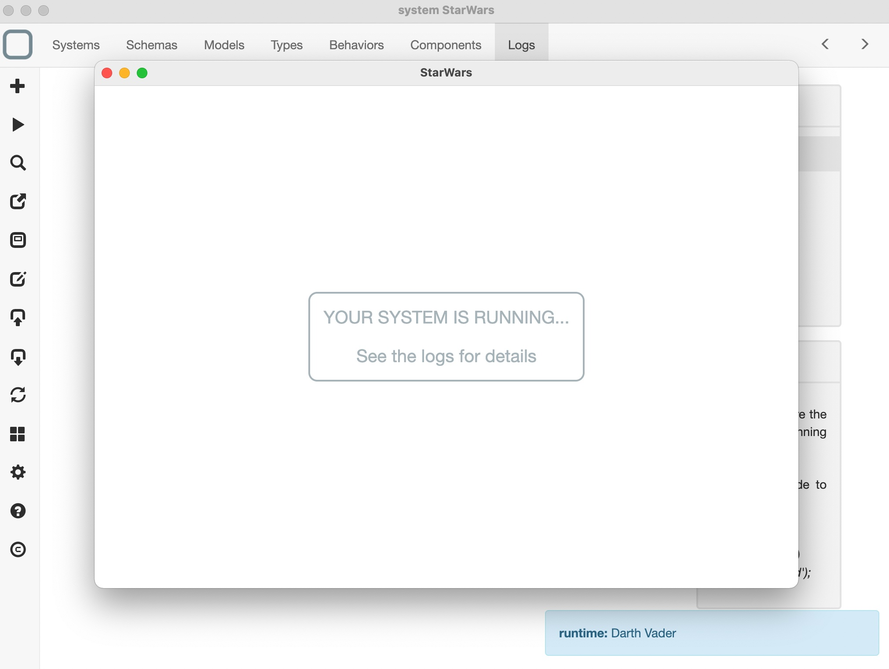
Your system is in fact running by a runtime, System Runtime, in this new window. All the messages and logs from your system will be then send to System Designer.
- click on the Logs tab to see all the logs send by the runtime.
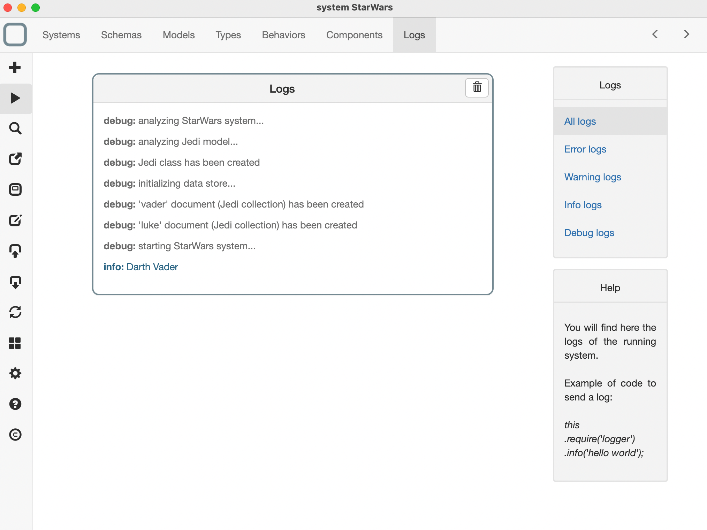
You will also get there the traces of your system that is executed. You will have a log everytime a component is created, updated or deleted at runtime.
View the class diagram of your system
Version compatibility
This feature is only available on the Windows, macOS, Linux and PWA versions of System Designer.
- just click on the corresponding button in the toolbar (the 5th button from the top)
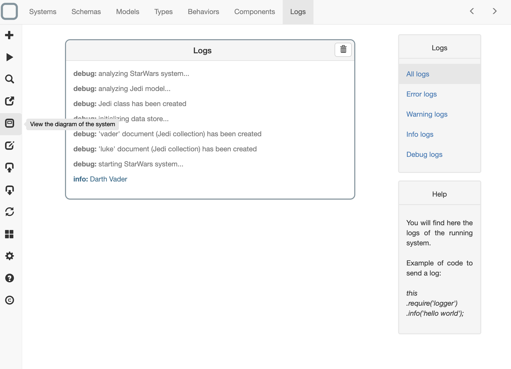
Then a new window will open and you will see the class diagram of your system.
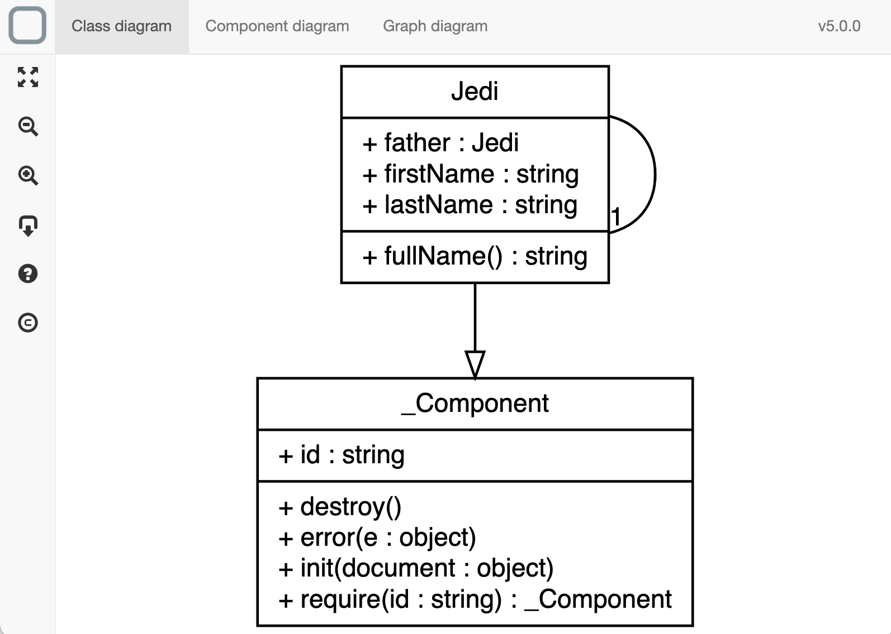
You will be able to:
- zoom in/out or
- move the diagram to explore the model.
You can also view the Component diagram and Graph diagram (if your system is a Graph) of your system.
Use your system client side
Version compatibility
This feature is only available on the Windows, macOS, Linux and PWA versions of System Designer.
- click on the export button,
- select HTML,
- your system will be exported in a HTML file,
- load the page and
- open the console of your browser to see the result.
You can also export your system into a JSON bundle and then import it in another web application.
Use your system server side
Version compatibility
This feature is only available on the Windows, macOS, Linux and PWA versions of System Designer.
- click on the export button,
- select Node.js,
- your system will be exported in a JavaScript file,
- save the file on your server project,
- in your project, install this package to run your system:
npm install system-runtime --save
- run your system:
node StarWars.js
You can also export your system into a JSON bundle and then import it in another server application.